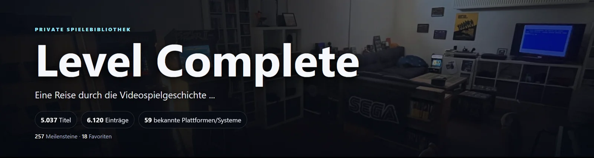
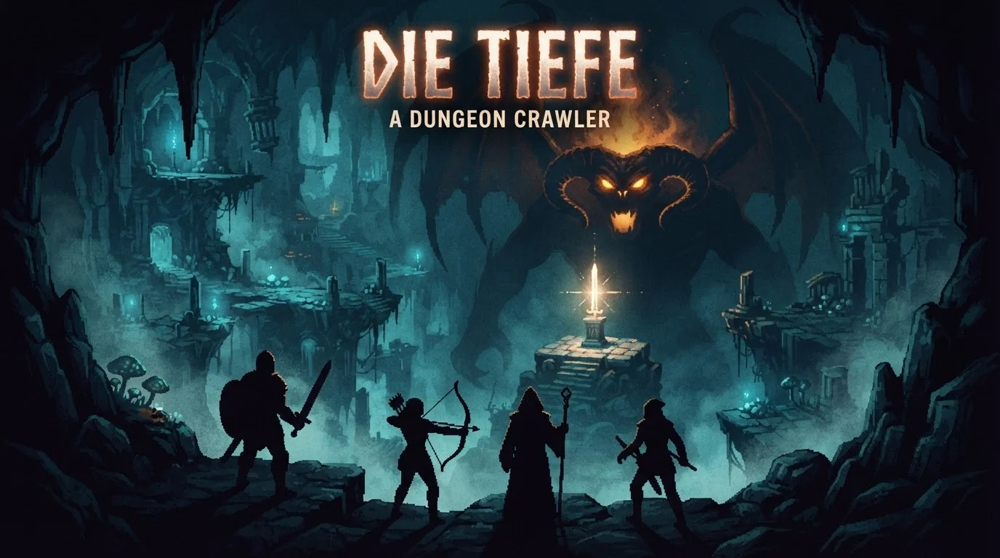

Aus Neugier.
Mit Spieltrieb.
Ein Zuhause für Spiele, eigene Projekte und Retro-Technik. Für Ideen, die einen zweiten Versuch verdienen. Und Klassiker, die bleiben.
Projekte entdecken ↘Auf dem Schirm.

Projektvorstellung · statisches BildLevel Complete↗
Ein Projekt rund um den eigenen Spielekatalog. Hier bekommt Level Complete einen öffentlichen Einblick – ohne Zugriff auf die private Anwendung.
Projekt ansehen →
Projektvorstellung · statisches BildDie Tiefe↗
Ein eigenes Dungeon-Crawler-Projekt. Key-Art, Charakterauswahl und Dungeon-Aufnahmen geben erste Einblicke in das Projekt.
Projekt ansehen → Projektvorstellung · statisches Bild
Projektvorstellung · statisches BildPong↗
Ein Klassiker als eigenes Projekt. Platz für die persönliche Umsetzung, technische Entscheidungen und die Freude am Spiel.
Projekt ansehen →Die Werkbank↗
Der vorgesehene Platz für weitere Projekte, Retro-Hardware und kleine Experimente zwischen gestern und morgen.
Projekt ansehen →Nicht alles muss neu sein.
Aber es darf eigen sein.
SSP verbindet den Blick zurück mit der Lust, selbst etwas zu bauen: Spiele entdecken, Technik verstehen und eigene Ideen ausprobieren.
Projektbilder geben Einblicke in eigene Spiele und Entwicklungen. Weitere Projekte und ihre Geschichten folgen nach und nach.